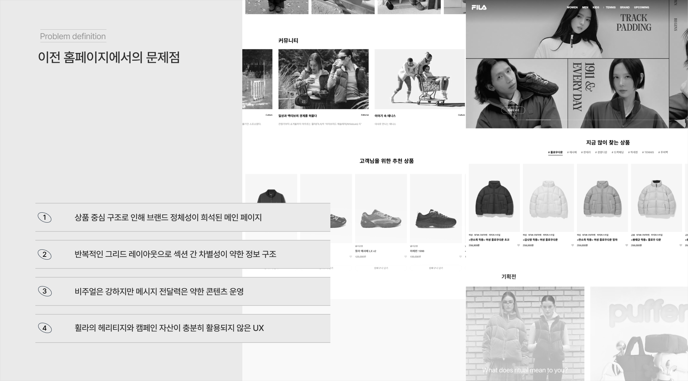
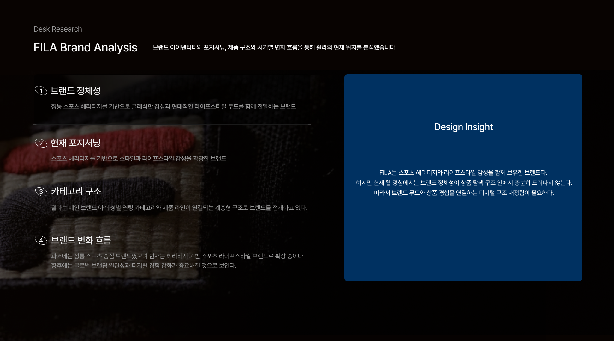
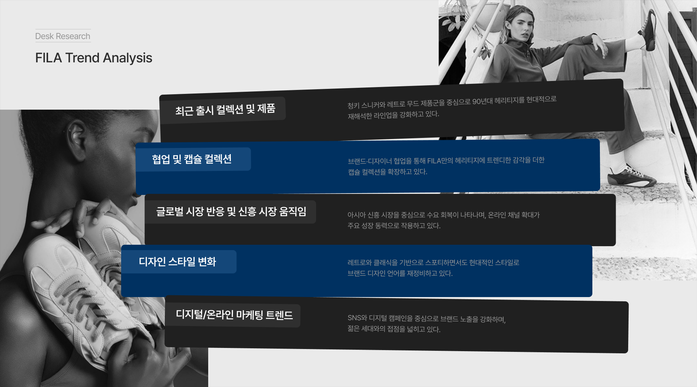
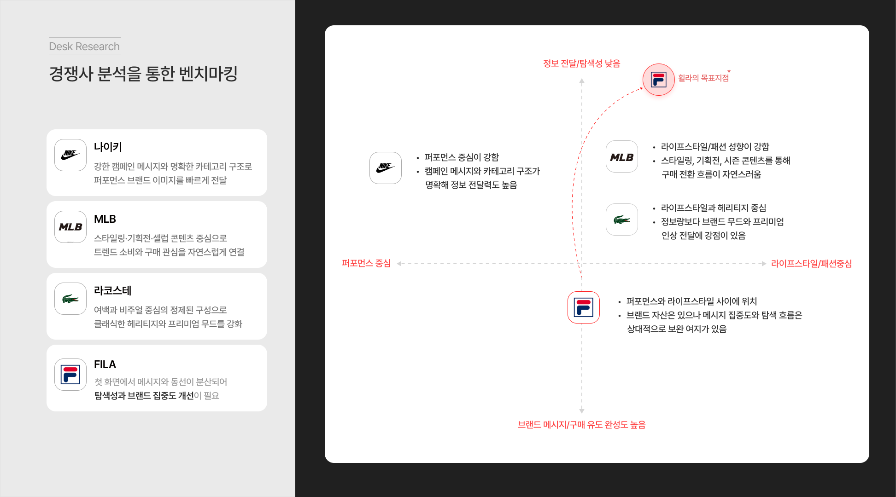
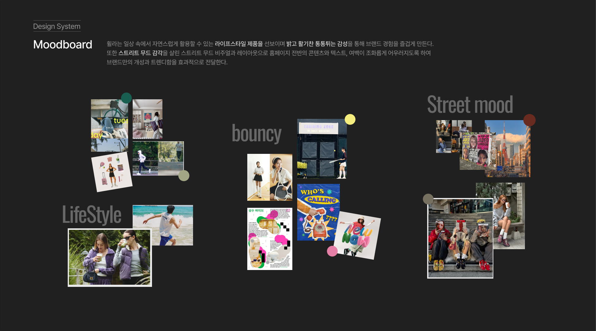
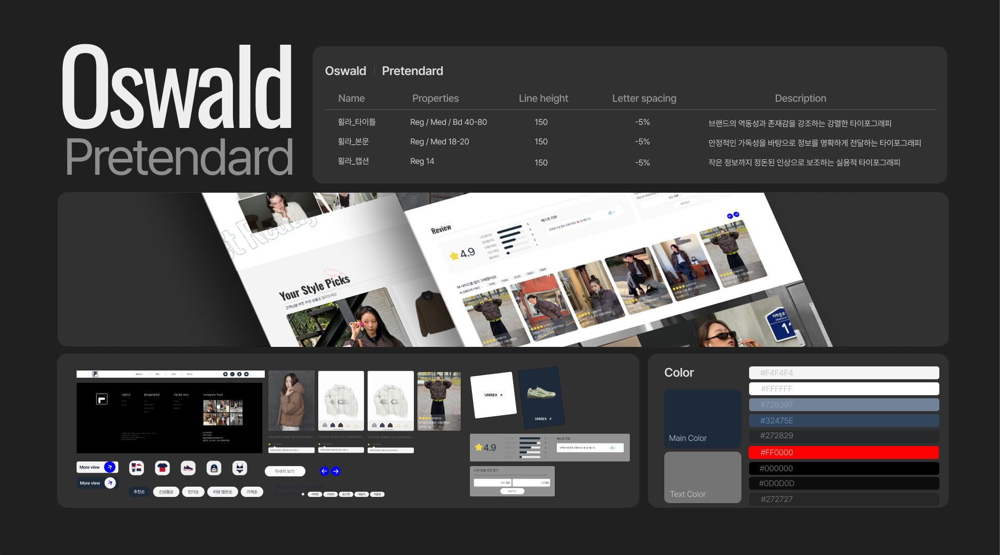

Project Detail View
프로젝트 자세히 보기












'FILA, Reframed' — 브랜드 자산은 충분하지만, 상품 중심 구조로 인해 브랜드 서사와 구매 흐름이 분리되어 있었습니다. 이번 리디자인은 브랜드 경험과 상품 탐색을 연결하는 것을 핵심 목표로 삼았습니다.
기여도 100%로 브랜드 리서치부터 무드보드, 디자인시스템, 화면 설계까지 전 과정을 단독으로 진행했습니다. 브랜드 스토리-콘텐츠-상품-구매 전환이 유기적으로 연결되는 구조로 리디자인하는 것을 목표로 했습니다.
이전 홈페이지의 네 가지 문제를 정의했습니다. ① 상품 중심 구조로 인해 브랜드 정체성이 차지하는 공간이 없는 메인 페이지 ② 반복적인 그리드 레이아웃으로 섹션 간 차별성이 없는 정보 구조 ③ 비주얼로 강화되지 않아 시각 전달력이 약한 콘텐츠 운영 ④ 휠라의 레이아웃과 캠페인 자산이 충분히 활용되지 않은 UX.
헤리티지는 있으나 디지털 경험에서 충분히 드러나지 않고, 브랜드와 구매 흐름이 분리된 현재 구조를 브랜드 스토리·콘텐츠·상품·구매가 하나의 경험으로 연결되도록 재설계하는 것이 핵심 과제였습니다.
자사 분석 → 트렌드 분석 → 경쟁사 분석 → SWOT → 프로젝트 목표 수립 → 무드보드 → 디자인시스템 → 화면 설계 순으로 진행했습니다.
자사 분석, 트렌드 분석, 경쟁사(나이키·아디다스·뉴발란스) 벤치마킹, SWOT 분석을 통해 휠라 브랜드 자산과 기회를 파악했습니다. 브랜드 키워드를 Heritage·Sporty·Lifestyle으로 정의했습니다.
무드보드를 통해 헤리티지의 현대적 재해석 방향을 설정하고, 컬러·타이포그래피·컴포넌트 시스템을 구축했습니다. 일관된 시각 언어가 브랜드 인식을 강화한다는 원칙을 적용했습니다.
브랜드 스토리의 가시성 강화, 브랜드 경험과 구매 동선 연결, 정보구조 재정비를 통한 탐색 효율 개선의 세 가지 목표를 기반으로 메인·컬렉션·상품 상세 화면을 설계했습니다.
베스트·시그니처 상품을 메인에 배치해 브랜드 인지도와 상품 접근성을 높이고, 색상·사이즈·재고 등 구매 판단에 필요한 정보를 한눈에 확인할 수 있도록 상품 탐색 UX를 개선했습니다.
SNS·스포츠 후원 콘텐츠를 연결해 참여형 브랜드 경험을 확대하고, 헤리티지를 현대적인 톤으로 재구성해 기존 고객과 신규 고객 모두에게 어필하는 구조를 만들었습니다.
리디자인은 기존을 부수는 것이 아니라, 브랜드가 가진 고유한 자산을 더 잘 보이게 만드는 작업이라는 것을 이 프로젝트를 통해 확인했습니다. 타이포그래피·컬러·이미지 방향성이 하나의 톤으로 맞춰졌을 때 브랜드 인식이 달라지는 것을 직접 경험했습니다.
브랜드 스토리와 구매 흐름을 하나의 경험으로 연결하기 위해서는 단순한 레이아웃 개선이 아니라 정보 구조와 콘텐츠 전략 전체를 재정의해야 한다는 것을 배운 프로젝트였습니다.
Project Detail View





